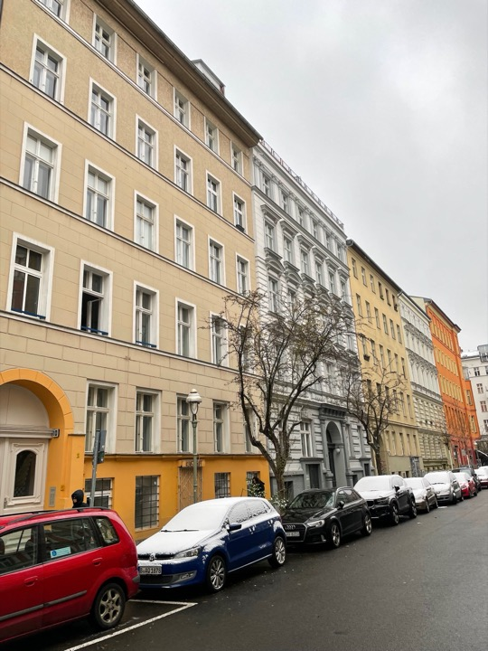
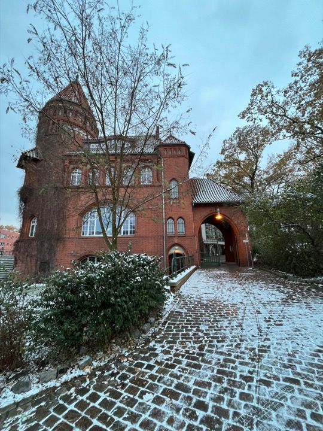
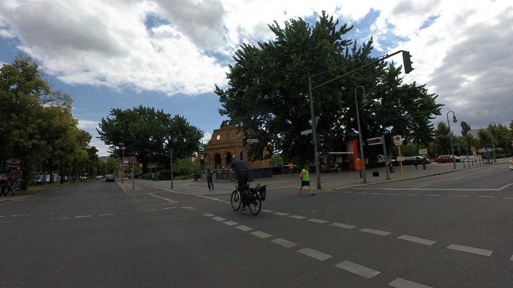
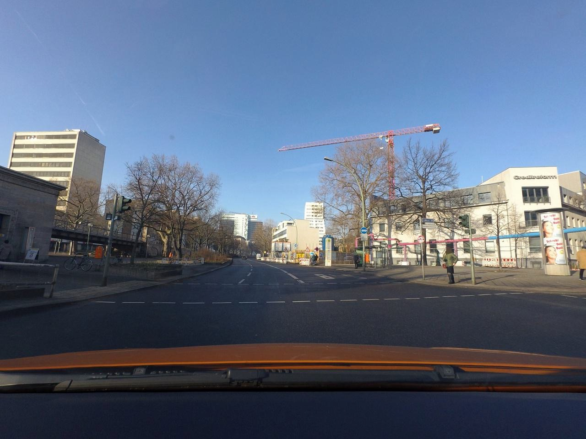

Abstract
Mesh-based scene representation offers a promising direction for simplifying large-scale hierarchical visual localization pipelines, combining a visual place recognition step based on global features (retrieval) and a visual localization step based on local features. While existing work demonstrates the viability of meshes for visual localization, the impact of using synthetic databases rendered from them in visual place recognition remains largely unexplored. In this work we investigate using dense 3D textured meshes for large-scale Visual Place Recognition (VPR) and identify a significant performance drop when using synthetic mesh-based databases compared to real-world images for retrieval. To address this, we propose MeshVPR, a novel VPR pipeline that utilizes a lightweight features alignment framework to bridge the gap between real-world and synthetic domains. MeshVPR leverages pre-trained VPR models and it is efficient and scalable for city-wide deployments. We introduce novel datasets with freely available 3D meshes and manually collected queries from Berlin, Paris, and Melbourne. Extensive evaluations demonstrate that MeshVPR achieves competitive performance with standard VPR pipelines, paving the way for mesh-based localization systems. Our contributions include the new task of citywide mesh-based VPR, the new benchmark datasets, MeshVPR, and a thorough analysis of open challenges.
Our proposed pipeline for mesh-based visual place recognition.
The training phase consists in downloading training (real) images and
the 3D mesh, generating their synthetic counterparts and specializing
the synthetic model through feature alignment. Once the training phase
is completed, the deployment phase can take part on any target city.
Example Results




Results maybe overlapping zoom in to see them all. Click on on image in the map to zoom in.